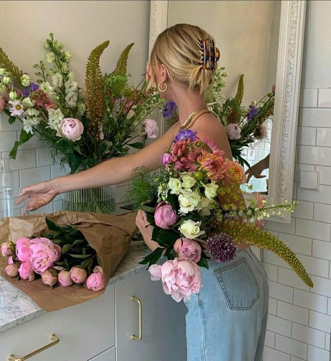

About Us
The Flower Bar is based out of Northern California in San Francisco and is owned by Rachel Matatyaou. Rachel wanted to share her love for flowers by making the process of buying flowers more fun and interactive! She loved watching her grandmother teach floral arrangement classes as a child, and as she grew up Rachel made buying flowers and designing a bouquet and weekly habit. This simple activity always brightens her day and she cannot wait to share her love for flowers with others!
